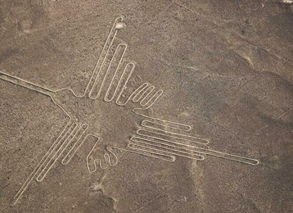

Nasca ― 標高約588m ナスカ
謎の地上絵で知られるナスカ文化は、紀元前後～800年ごろにかけて、海岸から約80kmほどの乾燥地帯に栄えていました。ナスカの人々は、広大な大平原（パンパ・インヘニオ）に数百にも渡る直線を引き、空中から見なくてはわからないほどの巨大な大きさの三角形の図形、動物、魚、植物などの絵を描きました。いったいこれらは何を意味しているのか、多くの人々がその謎にとらわれ、多くの仮説がたてられました。しかし、確実にわかったのは、絵はパンパを覆った黒い石や砂をどけて白っぽい地面を出すことによって描かれているということ。そして年間を通してほとんど雨が降らない気候が、地上絵を現在にまで残したということぐらいです。絵の大きさは約10mから大きなものでは約300mにも及び、その数およそ30個。ナスカの地上絵はいまだに多くの謎を秘めています。
ナスカへの行き方
長距離バス
リマからはクルス・デル・スールCruz del Sur、オルメーニョOrmeño、シバCivaなどが1日数便運航しています。所要時間は6時間半～7時間50分で料金はS/30～105。ナスカ行きのバスはパラカス（ピスコ）、イカを経由します。クスコとナスカをつなぐバスもあり、所要時間約9時間半の夜行バスでS/40～130です。時期によっては運行されていないこともあります。
ナスカの見どころ
ナスカの地上絵 Líneas de Nasca
地上絵を見るには、バスで片道8時間かけてナスカまで行くか、リマに近いイカやピスコの空港を利用するかの二択です。ナスカ発のフライトのメリットは、なんといっても料金が安いことです。また、小型の機体が多く比較的低空を飛行するため、地上絵をより間近で見ることができます。一方、滞在時間が短い人にとっては、リマから日帰りが可能なイカやピスコ発のフライトはそれだけで十分魅力的です。目的に合わせてプランを選びましょう。

- ナスカからのフライト
- イカやピスコから一気にフライトする
ナスカに着くとあちらこちらから地上絵遊覧飛行の案内人がやってきます。現地で手配する場合、フライト料金はシーズンや旅行会社によって多少前後しますが、1人US＄80～100程度、フライト時間は30分ほどです。重要なことは、ナスカの地上絵の見やすさはその日の天候や時間帯によって左右されるということです。地面の小石や砂を払いのけることで描かれている地上絵は基本的にとても平坦な作りであるため、真上からの日差しでは影ができにくく、地上絵によってはくっきり見えないものもあります。地上絵がはっきり見えるおすすめの時間帯は、斜光となる朝と夕方です。遊覧飛行の機体は乗客2人の小型機から、12人乗りの中型機まであり、ナスカ発では4～6人乗りが主流です。フライト状況は常に変更するため搭乗時間や機体を選ぶことはできませんが、予約するときに希望だけでも伝えておくといいでしょう。
ナスカまで移動する時間のない人に人気なのが、ナスカよりもリマに近いイカやピスコから出発するフライトです。リマからピスコまでバスで約3時間30分、イカまでは約4時間30分です。どちらの空港からもアエロディアナAerodianaが運行しています。12の地上絵を見る1時間30分のコースから、ナスカとパルパの地上絵のセットフライトもあります。12人乗りの中型セスナで料金は1人US＄200～、出発地点や季節によって異なります。